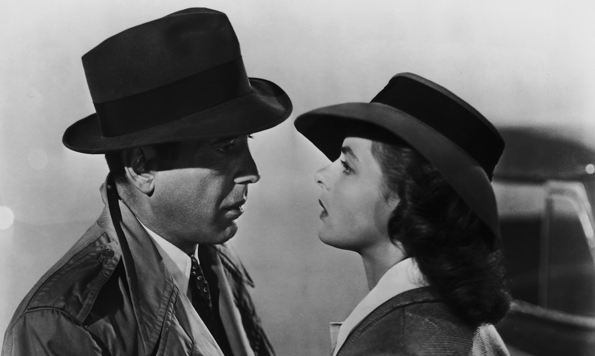
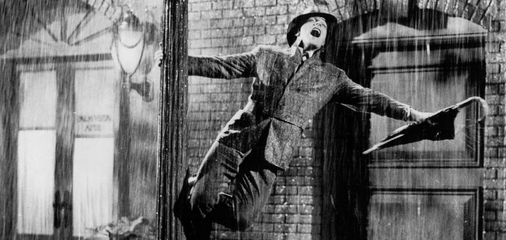
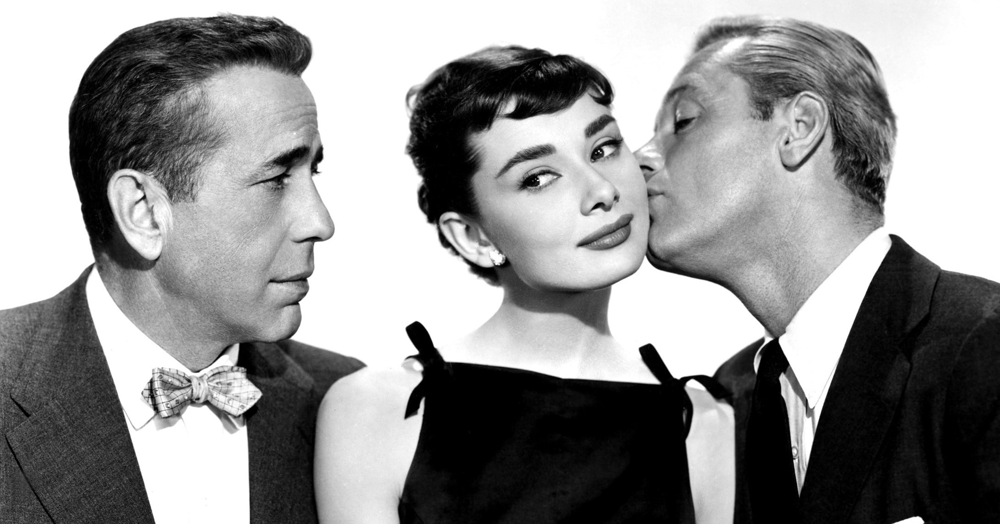
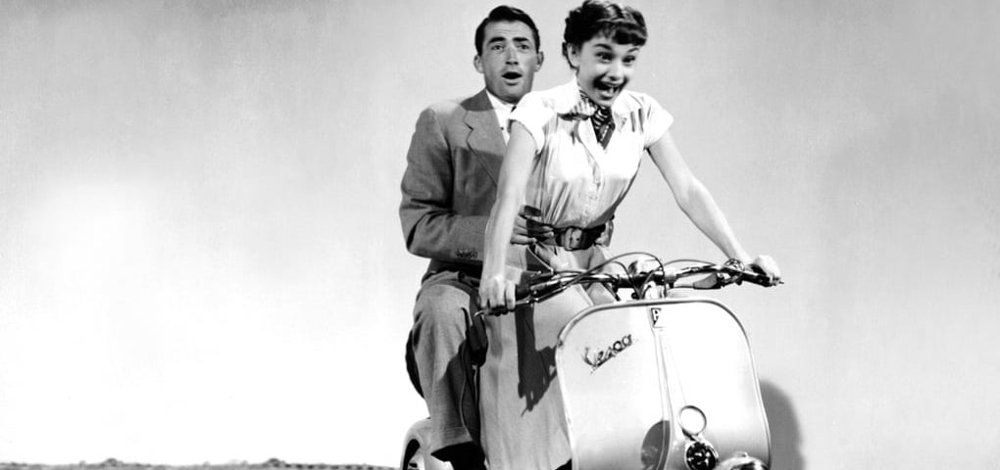

Top Four Recommendations:
1. Casablanca
Of all the gin joints in all the towns in all the world, she walks into his... In the role that shot him into stardom, Humphrey Bogart plays Rick Blaine the owner of a nightclub and gambling house. After running into his ex-lover Ilsa (Ingrid Bergman), Rick must decide whether he is going to help the Resistance and Ilsa's husband Victor (Paul Henreid) or choice to live a happy life with the woman he loves. Set during World War II, this film is full Nazis, thieves, and refugees each with their own agenda. With classic quotes and iconic love story, Casablanca continues to be one of the best romantic dramas of all time. This movie is one of my all time favorites
2. Sing in the Rain
Set in 1927, Hollywood Stars Gene Kelly, Debbie Reynolds, Donald O'Connor, and Jean Hagen portray Hollywood performers who a trying to transition from silent films to "talkies." Don Lockwood (Kelly) is part of a famous on-screen romantic pair with Lina Lamont (Jean Hagen). Instead of doing another silent film, the pair is asked to a do a musical but Lina doesn't have the voice for the songs. Kathy Selden, an aspiring actress, (Reynolds) is brought in and Don quickly falls in love with her. Production goes well...until Lina finds out. Singin' in the Rain is a lighthearted take on a difficult transition for Hollywood.This classic film stars in perhaps one of the greatest musicals ever made.
3. Sabrina
Sabrina stars three big names of the time Humphrey Bogart, William Holden and Audrey Hepburn in a classic Cinderella story. Sabrina (Audrey Hepburn), the chauffeur's daughter, has liked David (William Holden) for years but he never seems to really notice her. David spends most of chasing after whatever pretty girl he can find at the time. David’s brother Linus (Humphrey Bogart) couldn’t be more different as is all working, running the family business. After going away to Paris for two years, Sabrina comes home and things seem to change. She manages to catch David's eye, only he's supposed to be getting married to seal a family business deal. In an attempt to save the deal, Linus tries to woo Sabrina away from David and then send her back to Paris. However, Linus soon finds himself falling for Sabrina as well. Which brother will she choose? This is a classic romance with beautiful scenery and costuming from Givenchy, that will capture your heart and leave you with a warm feeling.
4. Roman Holiday
In the role that won her an Academy Award, Audrey Hepburn plays Princess Ann as she tires of being a royal while being on a tour in Europe. While in Rome, she sneaks out to experience what it's like to be free and to be an average person. She meets Joe Bradley (Gregory Peck), a news reporter who doesn't know who she is. However, Joe is assigned to write about the missing princess and it's only a matter of time before she is found out. Beautiful backdrops, a budding romance, and the struggle between duty and love are a few of the things that make this movie a must-see. This is perfect if you love romance and royalty